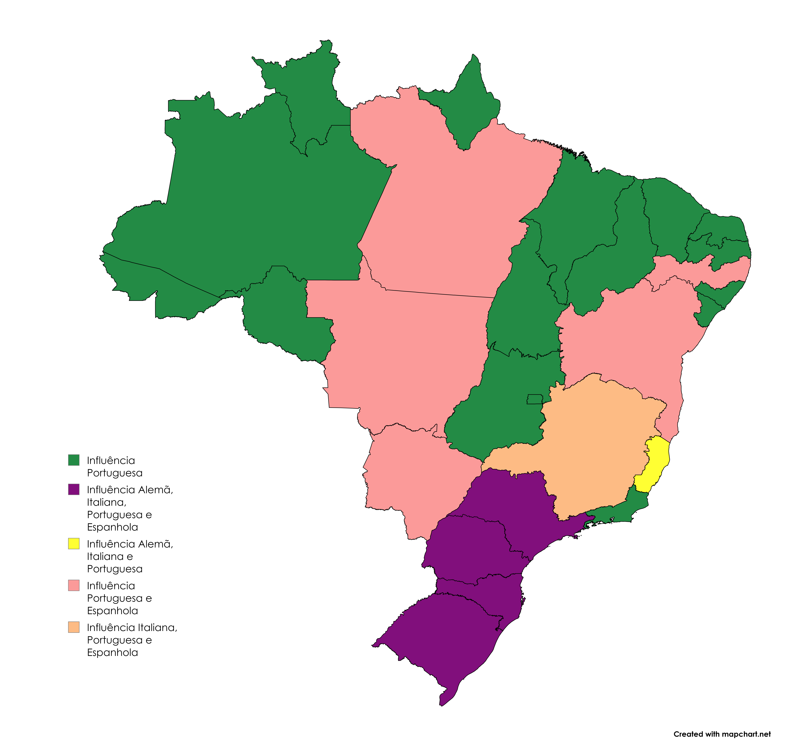
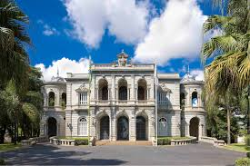
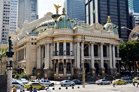

Veja onde cada influência europeia se espalhou pelo Brasil.
-
Italianos
Clique para ver mais sobre como os italianos influenciaram a culinária brasileira e o estilo arquitetônico.
Os italianos influenciaram muito a culinária e a arquitetura brasileira.
Na culinária, trouxeram pratos como massas, pizzas, lasanhas, nhoques e vinhos, que se misturaram aos sabores locais e viraram parte da comida do dia a dia.
Na arquitetura, trouxeram o estilo neoclássico e renascentista, com colunas, arcos e fachadas decoradas, visíveis em obras como o Palácio da Liberdade (MG) e o Teatro Municipal do Rio de Janeiro (RJ).
Palácio da Liberdade
Origem: Belo Horizonte, Brasil
Sede do governo mineiro com influência italiana, estilo neoclássico, com colunas e simetria elegante.
Teatro Municipal do Rio de Janeiro
Origem: Rio de Janeiro, Brasil
Inspirado no renascentismo italiano, tem fachada luxuosa, colunas e vitrais, lembrando grandes teatros da Itália.
-
Alemães
Clique para ver mais sobre como os alemães influenciaram a culinária brasileira e o estilo arquitetônico.
Os alemães influenciaram o Brasil principalmente no Sul, onde se estabeleceram no século XIX.
Na culinária, trouxeram pratos como chucrute, salsichas, batatas, cervejas e cucas (bolos doces), que se tornaram típicos em estados como Santa Catarina e Rio Grande do Sul.
Na arquitetura, deixaram o estilo enxaimel, com casas de madeira aparente, telhados inclinados e janelas pequenas, visível em cidades como Blumenau e Pomerode (SC).
 ale.jpg)
Cidade de Blumenau
Origem: Blumenau, Brasil
Cidade com forte influência alemã, marcada pelo estilo enxaimel, com casas de madeira aparente e telhados inclinados, trazido pelos imigrantes no século XIX.
 ale.jpg)
Cidade de Pomerode
Origem: Pomerode, Brasil
Conhecida como “a cidade mais alemã do Brasil”, mantém o estilo enxaimel nas construções, com janelas pequenas e varandas floridas, típicas da Alemanha.
-
Portugueses
Clique para ver mais sobre como os portugueses influenciaram a culinária brasileira e o estilo arquitetônico.
Os portugueses foram os primeiros a influenciar o Brasil, desde o período colonial.
Na culinária, trouxeram pratos como bacalhau, caldos, doces à base de ovos, azeite e o costume de usar arroz e feijão nas refeições.
Na arquitetura, introduziram o estilo colonial e barroco, com igrejas, azulejos coloridos, torres sineiras e varandas, visíveis em cidades como Ouro Preto (MG) e Tomar do Geru (SE).

Igreja de São Francisco de Assis
Origem: Ouro Preto, Brasil
Obra barroca de Aleijadinho, com altares dourados e esculturas, exemplo do barroco português no Brasil.

Igreja de Tomar do Geru
Origem: Tomar do Geru, Brasil
Um exemplo notável da influência portuguesa na arquitetura brasileira, a Igreja de Tomar do Geru é um marco histórico do estado de Sergipe.
-
Espanhóis
Clique para ver mais sobre como os espanhóis influenciaram a culinária brasileira e o estilo arquitetônico.
Os espanhóis influenciaram o Brasil principalmente em construções urbanas e militares.
Na culinária, trouxeram doces, pães e técnicas de conserva, que se misturaram aos hábitos locais.
Na arquitetura, deixaram traços do estilo colonial e neogótico, com arcos, varandas, fachadas imponentes e castelos, visíveis em obras como o Castelinho do Flamengo (RJ) e o Palácio dos Leões (MA).

Castelinho do Flamengo
Origem: Rio de Janeiro, Brasil
Construção em estilo neogótico espanhol, com torres, vitrais e janelas ogivais, lembrando castelos medievais da Espanha.

Palácio dos Leões
Origem: Maranhão, Brasil
Edifício histórico com influência espanhola e portuguesa, possui arcos, varandas e colunas, destacando a arquitetura ibérica.